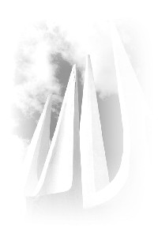

| Merveilles de Maître |
 Mes parents habitent IIan. L'année passée (1998), bien avant le jour de la fête des morts, très tôt le matin, j'ai reçu soudain un appel m'annonçant que mon père âgé de 89 ans était mourant. Immédiatement, je suis rentrée à la maison, j'ai fondu en larmes quand j'ai vu mon père geignant et gémissant de douleur. J'ai compris que sa dernière heure était venue puisque huit mois plus tôt, j'en avais été informée par le corps de manifestation de Maître. Sans hésité, j'ai mis les chants bouddhiques de Maître et avec mon mari initié, nous avons médité de chaque côté de mon père et avons prié pour les bénédictions de Maître. Petit à petit, mon père a cessé de gémir et s'est endormi. Le lendemain, on l'a amené à l'hôpital mais l'hôpital a refusé toute action supplémentaire. Je priais Maître de nettoyer le plus rapidement possible son karma tout en récitant les Noms Sacrés. J'ai également mis des photos de Maître dans son manteau et ses poches de pantalon. J'ai été très reconnaissante envers Maître car mon père est mort dans les deux minutes qui suivaient. Je savais qu'Elle prenait soin de lui à chaque instant.
Alors que toute la famille réunie méditait et récitait les Noms Sacrés, j'ai vu de nombreux saints ainsi que les «Trois trésors bouddhiques» se tenant de chaque côté du corps de mon père. Au même instant, l'apparence de Maître s'est changée du Bodhisattva Guan Yin en dames habillées de façon moderne. Cinq minutes après la mort de mon père, mes deux soeurs aînées et ma soeur cadette qui ne sont pas végétariennes, ont vu aussi les saints et les dieux locaux de tous les temples de IIan passant un par un près du lit de mon père comme des personnages de dessin animé. Plus tard, ma soeur cadette a vu de beaux paysages et de somptueux édifices où vivaient de nombreux Saints, ce qu'elle n'avait jamais vu auparavant. Plus haut vivait les saints, plus grande était leur apparence. Le drap couvrant le lit sur lequel était étendu mon père était inondé d'une lumière qui s'élevait jusqu'au plafond. Cette lumière était si brillante que nos yeux ne pouvait que difficilement la supporter. La chambre sentait le bois de santal. Maître tenait un bâton à la tête d'un dragon qui émettait une lumière blanche qui commençait à soigner le corps spirituel de mon père. Elle a mis aussi beaucoup de bijoux son corps et a décoré le cercueil. De même qu'Elle a trouvé un lieu beau et parfait pour la tombe. Nos ancêtres avaient pris place dans des bateaux dharma qui s'élevaient déjà vers le ciel.
De 14h25, l'heure de la mort de mon père, jusqu'à 3h00 du matin, toute la famille a médité et récité sans cesse les Noms Sacrés. Son visage est devenu jeune et beau comme celui d'un «bel homme». Le matin du troisième jour à 6h00, nous avons médité de nouveau, lorsqu'à 7h00 j'ai vu vers le haut, une lumière dorée pleuvoir comme des taches au dessus de nos têtes. J'étais à la fois émue et contente que ma famille puisse recevoir la bénédiction de Maître. Ma soeur cadette voyait constamment Maître. L'aînée a vu aussi Maître, elle était si contente qu'elle a joint les deux mains et s'inclinait constamment devant Maître. Ma troisième soeur aînée a vu Maître assise sur une fleur de lotus avec mon père dans Ses bras, s'envolant vers le ciel. Maître comprenait chacune de ses pensées. C'est alors qu'elle a réalisé la grandeur de Maître. Elle s'est repentie et est devenue végétarienne et a reçu l'initiation. Elle avait l'habitude d'aimer tellement la viande qu'elle ne pouvait pas ne pas en manger lors d'un repas.
Personne n'avait remarqué quand cela a commencé mais une lumière dorée se déployait du corps de mon père formant un écran aussi large qu'au cinéma. La lumière du bas était très brillante et portait une fleur de lotus. Dans le coin inférieur droit il y avait des saints blancs et dorés. D'autres saints, et ceux de Fo Guang Shan un à un s'élevaient graduellement vers le ciel. La lumière du dessus était faible, au milieu, il y avait comme un escalier qui montait vers le ciel. Le corps de manifestation de Maître descendait souvent les escaliers et apparaissait sur l'écran dans différents endroits sous diverses formes et tenues. Plus tard, j'ai vu Maître portant mon père dans Ses bras, se dirigeant vers un jardin beau et frais. Mon père se reposait sur une chaise longue au soleil. Devant le dessus de lit, j'ai vu Maître habiller mon père d'une parfaite élégance, sa moustache s'était recourbée vers le haut, il portait un chapeau tout a fait spécial et souriait joyeusement.
Á cet instant, un enfant m'a dit : " Tati ! Tati ! Regarde, Maître tient un parapluie blanc, il y a aussi le petit dieu Nezha ". Ma seconde soeur a vu que Maître était vêtue en empereur Qian Long et parée de splendides bijoux. Elle a vu aussi les vagues de la mer aller et venir vers le rivage. La scène était vraiment admirable. (Sur le même écran, au même instant, nous avons vu quelque chose de différent de ce qu'avait vu ma soeur). Mon frère cadet a affirmé que Maître avait toujours été là.
Mon frère aîné âgé de 66 ans a admis qu'il est bien difficile d'être accueilli par des saints lors de sa mort. Bien que mon père adorait les saints, faisait de son mieux pour les autres, il n'était pas végétarien et ne méditait pas. Par conséquent, il était impossible qu'il soit honoré de la présence de saints par nos prières. Pourtant, à 14h30 lorsqu'il est arrivé près de la porte, il a été stupéfié de voir plusieurs saints autour de la photo de mon père. Souriant à chacun de nous, il a joint les paumes des mains, s'est incliné à 90 degré devant les saints en disant " Merci, merci ". Après cela, mes oncles, tantes, nièces et les enfants ont tous vu les saints. Tous ensemble, environ vingt personnes ont vu l'incroyable corps de manifestation de Maître. Nous étions tous heureux et de très bonne humeur.
Plus tard, ma soeur cadette et moi-même avons admiré la forme dorée d'une grande Bodhisattva Guan Yin aussi grande que le toit, pendant que les apparitions constantes du corps de manifestation de Maître s'opéraient sous différentes formes. Nous observions le coeur heureux et plein de sincérité. Maître était vraiment compatissante ! L'apparition de Maître et des saints s'opérait maintenant sur un côté du mur et sur les trois côtés du rideau qui entourait le lit. Cette scène a duré jusqu'à 18h30 lorsque le corps de mon père a été mis en bière et que nous avons emporté le rideau.
Le corps de mon père était devenu très léger et son visage paisible. Plus étrange encore son ventre ne s'était pas dilaté. Il avait meilleure mine que de son vivant. Ma soeur cadette a vu Maître poser de précieux bijoux sur son ventre. Tous ceux qui étaient présents affirmaient qu'il paraissait jeune et beau. Il s'était écoulé exactement 31 heures entre la mort de mon père et le moment où son corps a été mis en bière, et il faisait pourtant chaud. Cependant, son corps était bien conservé. C'était vraiment un miracle.
Sur le retour vers la maison à Kaohsiung, mon mari conduisait, ma plus jeune soeur, assise derrière récitait les Noms Sacrés. Elle a vue le toit de la voiture disparaître et Maître est apparue dans le ciel avec mon père qui souriait joyeusement. Maître a pris soin de mon mari durant tout le trajet pour arriver en toute sécurité jusqu'à la maison.
Même après la mise en bière, Maître était toujours là. Le soir du 7ème jour après la mort de mon père, ma seconde soeur a vu une fleur de lotus blanche au dessus du cercueil. Au 9ème jour, ma plus jeune soeur a vu des feux d'artifices colorés dans le ciel. Elle n'avait jamais vu d'aussi belles couleurs. C'était incroyable.
Le 36e jour après que mon père ait été enterré, le soleil brillait mais nous ne sentions pas la chaleur. Le vent soufflait doucement alors que la radio émettait les chants de Maître. j'étais enivrée par l'atmosphère, convaincue que Maître s'occupait de tout. Ma troisième soeur a remarqué que la route du retour par la montagne était pavée d'or. Plus tard, elle a vu mon père devant elle, sous la forme du Bodhisattva Guan Yin avec un halo autour de la tête. J'étais émue par toutes ces expériences.
Á chaque fois que je pense à toutes ses merveilleux choses qui se sont passées après la mort de mon père, je pleure d'émotions. J'ai vraiment la chance d'avoir un Maître aussi puissant et compatissant, qui a fait de moi une enfant pieuse capable de rembourser mes parents. Je n'oublierai jamais la bénédiction de Maître et ne pourrai dire assez «Merci» à Maître.
Le Maître nous a toujours dit que pendant l'initiation cinq générations de notre famille sera libérée. Bien sûr, je La crois, pourtant je n'y avais pas prêté beaucoup attention. J'ai lu dans les revues et avais entendu des amis parler des incroyables expériences vécues par les amis pratiquants lorsqu'ils ont perdu des proches. Je n'aurais jamais pu imaginer qu'à la mort de mon père le spectacle aurait été si grand ! J'ai été tellement touchée par cette expérience et j'en suis profondément reconnaissante. Ceci n'est peut-être simplement qu'une des grandes démonstrations des pouvoirs de Maître et je ne veux pas la garder simplement pour moi. J'aimerais que ce que j'ai expérimenté et vu puisse être un témoignage du pouvoir de Maître. Et par conséquent que cela aide à fortifier la foi de nos amis pratiquants. Je peux également témoigner que toutes les paroles et actions de Maître affirment ce dicton : «Un Maître illuminée ne ment pas». En pratiquant la Méthode Guan Yin, non seulement nous en tirons des bienfaits mais nos proches et amis seront aussi élevés par Maître.